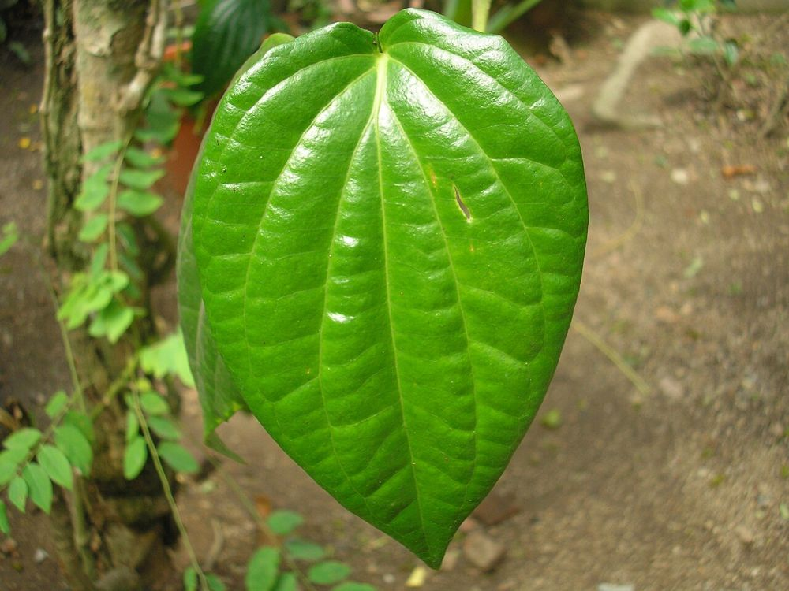

🌿 சித்த மருத்துவக் குறிப்பு:
உணவுக்குப் பின் ஒரு வெற்றிலை மென்றால் செரிமானம் மேம்படும். குழந்தைகளின் நெஞ்சுச் சளிக்கு, வெற்றிலையில் விளக்கெண்ணெய் தடவி லேசாகச் சூடாக்கி நெஞ்சில் வைப்பது பாட்டி வைத்தியம். (புகையிலை, பாக்குடன் சேர்த்து மெல்லுவது வாய்ப் புற்றுநோயை உண்டாக்கும் – வெற்றிலையை மட்டும் பயன்படுத்தவும்.)
🍃 வெற்றிலை – உங்களுக்குத் தெரியுமா?
1மிளகின் சொந்தக்காரி
வெற்றிலை, கருமிளகின் அதே குடும்பத்தைச் சேர்ந்த கொடி. அதனால்தான் இதன் இலையில் லேசான காரச் சுவை உள்ளது.
2அகத்தி மரத்தில் படரும் கொடி
வெற்றிலைக் கொடிக்கால்களில் அகத்தி மரங்களை உயிர்க்கம்பங்களாக நட்டு, அவற்றின் மேல் வெற்றிலைக் கொடியைப் படரவிடுவது நம் விவசாயிகளின் தனி நுட்பம்.
3மரியாதையின் அடையாளம்
திருமண அழைப்பு முதல் விருந்தோம்பல் வரை, "வெற்றிலை பாக்கு வைத்து அழைப்பது" தமிழர் பண்பாட்டில் மிக உயர்ந்த மரியாதையாகக் கருதப்படுகிறது.
இந்தத் தகவல் பயனுள்ளதாக இருந்ததா?